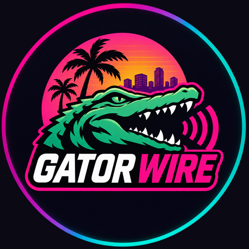

Gator Wire
Gator Wire is a fan-run news page about GTA 6: the latest confirmed news, details and launch updates, as short videos and posts.
Follow us on YouTube @gatorwire, Instagram @gator.wire and TikTok @gatorwire.
Our own app connects only to Gator Wire's own social media accounts, to publish our posts after our editor approves each one.